Operating Documentation
Direction 5193574-800, Rev# 22
LightSpeed 7.X Service Methods
Module Version 1.0, Version Date 5/17/10
Operating Documentation |
| Last Revised: | 1 April 2010 |
The follow information will assist in confirming if the DIG2 Computer is experiencing a hardware fault. Although the following is not a complete set of diagnostics, it should be sufficient in determining if the DIG2 Computer is suffering from hardware issues at the prescribe Field Replaceable Unit (FRU) level.
Illustration 1: DIG2 Computers
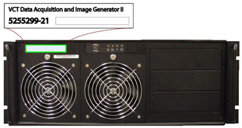
| ||||
| ELECTROCUTION HAZARD | ||||
| Disconnect ac power cord from the dig2 computer before reseating or replacing components because there is power to the system board even when the dig2 computer is powered down. | ||||
| use proper lockout/tagout procedures before replacing the components. |
TO PREVENT DAMAGE TO COMPONENTS WITHIN THE DIG2 COMPUTER, OBSERVE THE FOLLOWING ESD PRECAUTIONS:
WORK ON A STATIC-FREE MAT.
WEAR A STATIC STRAP TO ENSURE THAT ANY ACCUMULATED ELECTROSTATIC CHARGE IS DISCHARGED FROM YOUR BODY TO GROUND.
CREATE A COMMON GROUND FOR THE EQUIPMENT YOU ARE WORKING ON BY CONNECTING THE STATIC-FREE MAT, STATIC STRAP AND PERIPHERAL UNITS TO THAT PIECE OF EQUIPMENT.
FOR FURTHER INFORMATION REGARDING ESD PROTECTION, REFER TO THE SAFETY CHAPTER IN THIS PUBLICATION
Before proceeding with the rest of this guide, use the following checklists to find possible solutions for DIG2 Computer problems.
Is the DIG2 Computer powered on?
Is the front panel green power light illuminated?
Has Circuit Breaker #1 or #2 (CB1 or CB2) tripped on Power Distribution Box?
Is the DIG2 Computer connected to the proper electrical outlet on the Power Distribution Box?
Has the DIG2 PSU Switch been turned on (on back of DIG2 chassis)?
Examine all cables for loose or incorrect connections:
Network Cables
DIP Optical Link Cables
SAS Controller Cables
The DIG2 computer is equipped with a Remote Management Module (RMM), with its own dedicated Ethernet network access. The RMM is a self contained micro computer running operating and application software embedded within the firmware of the RMM card. As long as the standby power (3.3V) of the DIG2 computer’s power supply is present, the RMM will operate and allow access from the Host Computer.
The RMM in the DIG2 Computer provides the means for virtual presence (remote console) at the Host Computer. This presence includes keyboard, video and mouse redirection. By utilizing a RMM in the DIG2 Computer, an independent path for communication and hardware status checking can be established without the need of a fully functioning DIG2 Computer.
The RMM functionality replaces the Serial over LAN (SOL) functionality used in previous console generations.
| ||||
| CAUTION MUST BE OBSERVED WHEN WORKING WITH THE RMM. | ||||
| SETTINGS AND OPTIONS SHALL NOT BE ALTERED. ONLY ACCESS THOSE FEATURES DESCRIBE BELOW. | ||||
| ONLY TRAINED INDIVIDUALS SHOULD ACCESS THE RMM |
To access the RMM, open a Terminal Window, and log on as root:
Type: {ctuser@hostname}su - and press [ENTER]
Type the root password and press [ENTER]
Launch the Mozilla WEB Brower:
Type: [root@hostname]mozilla and press [ENTER]
The Mozilla (Fedora) WEB Browser Illustration 2 will appear .
Illustration 2: Mozilla WEB Browser

In the WEB Browser URL Address Bar:
Type: darcrmm and press [ENTER]
The WEB Browser will update and display the Login page (Illustration 3) for the DIG2 RMM.
Username: Type: admin and press [TAB]
Password Type: password and press [ENTER]
Illustration 3: DIG2 RMM Login Page
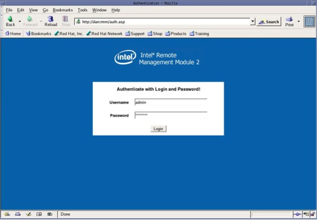
The WEB Browser will update and display the Home page (Illustration 4) for the DIG2 RMM.
Illustration 4: DIG2 RMM Home Page
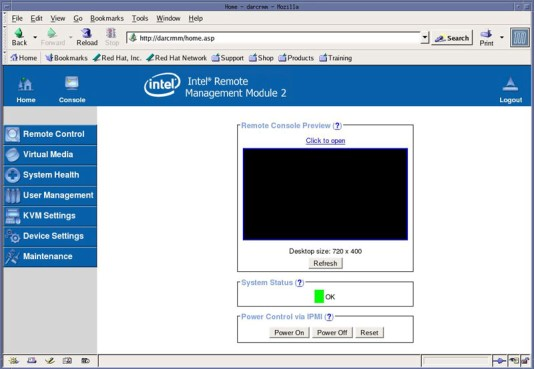
By clicking on the Console ICON, the Remote Console Preview window or Remote Control/KVM Console navigation Button, a new window will be open displaying the DIG2 Computer’s display (Illustration 5). In other words the DIG2 Computer’s video will be redirected to the Host Computer’s display, displayed in the WEB Browser’s Remote Console Window. This feature will allow the user to view the following:
DIG2 Video Display - In normal operating mode
DIG2 Bootup - When DIG2 is reset independently
DIG2 BIOS Settings - When F2 is pressed at start of DIG2 bootup
Illustration 5: DIG2 RMM Remote Console
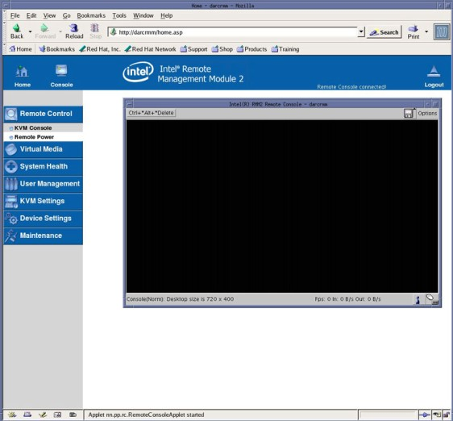
By clicking [Remote Control/Remote Power], the DIG2 Computer can be reset or power can be turned ON and OFF.
| NOTE: | Resetting the DIG2 Computer or toggling power takes a few minutes to process. |
By clicking [System Health], the DIG2 Computer’s hardware revisions can be checked. System Board information will be displayed (Illustration 6).
Illustration 6: DIG2 RMM System Health
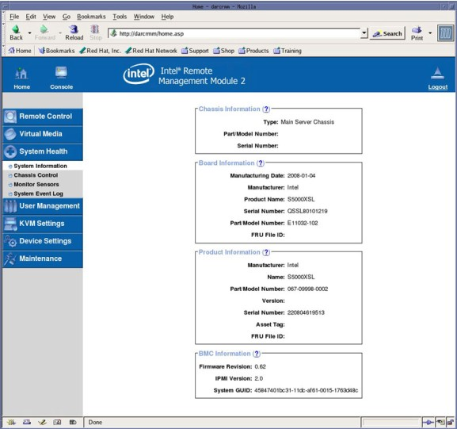
By clicking [System Health/Monitor Sensors], the DIG2 Computer’s IPMI sensors can be monitored (Illustration 7). This is useful for determining if hardware failures are present or operating temperatures are being exceeded.
Illustration 7: DIG2 RMM System Health / Monitor Sensors
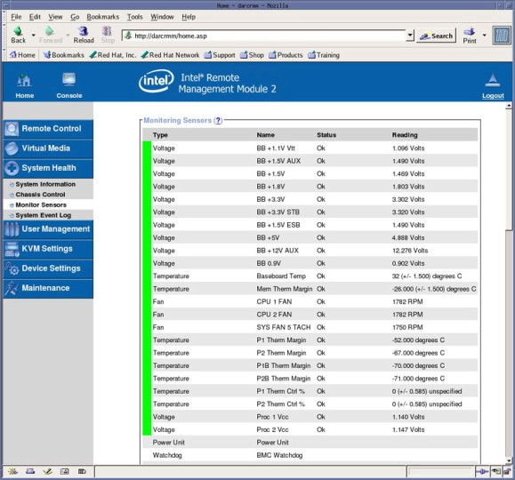
By clicking [System Health/System Event Log], the DIG2 Computer’s RMM event logging can be viewed (Illustration 8). This is useful for determining if hardware failures are present.
Illustration 8: DIG2 RMM System Health / System Event Log
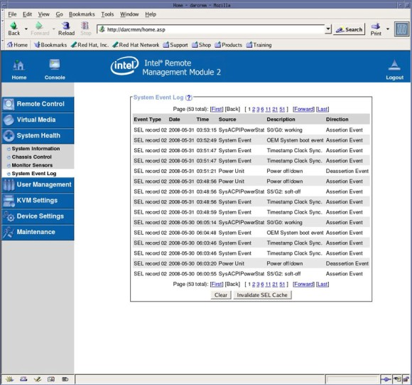
The DIG2 Computer has numerous status LEDs mounted on the motherboard and chassis that can indicate hardware faults and operational status of the computer. Some of these LEDs are visible on either the front or back of the DIG2 Computer chassis while others require that the DIG2 Computer be removed from the console, AC power applied and chassis cover removed.
Illustration 9: Front Panel Indicators

The Power Status LED has the following states:
Power Status LED has no color showing: PC is off or is in Sleep Mode (not used).
Solid Green: Host PC on.
The NIC LEDs have the following states:
NIC LED has no color showing: No connection.
Solid Amber: NIC is linked.
Blinking Amber: NIC Activity
The HDD Status LED has the following states:
HDD Status LED has no color showing: No HDD Activity.
Blinking Amber: HDD Activity.
Illustration 10: System Status, ID, POST and NIC LED Locations
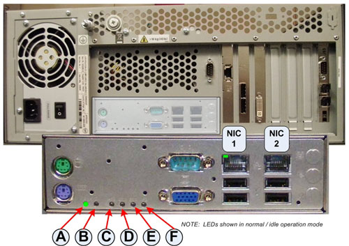
Table 1: DIG2 Computer System ID and Status LEDs
| A. Status LED | D. Bit 2 LED (Post LED) |
| B. ID LED | E. Bit 1 LED (Post LED) |
| C. MSB LED (Post LED) | F. LSB LED (Post LED) |
System Status LED (A)
Table 2: DIG2 Computer System Status LED Codes
| Color | State | Criticality | Description (A. Status LED) |
|---|---|---|---|
| Off | n/a | Not Ready | AC power off. |
| Green / Amber | Alternation Blink | Not Ready | Pre DC Power On - 20-30 second BIOS Initialization when power is applied to DIG2. |
| Green | Solid On | System OK | System booted and ready. |
| Green | Blink | Degraded | System degraded. |
| ● Unable to use all installed memory (more than one DIMM installed) | |||
| ● CPU Failure / Disabled - if there are two processors and one fails. | |||
| ● PCI-e link errors | |||
| ● Fan Alarm - Fan failure | |||
| ● Non-critical threshold crossed - Temperature and Voltage | |||
| Amber | Blink | Non-critical | Non-fatal Alarm - system likely to fail |
| ● Critical voltage threshold crossed | |||
| ● VRD hot asserted | |||
| ● Minimum number of fans to cool the system not present of failed | |||
| Amber | Solid On | Critical, non-recoverable | Fatal Alarm - system has failed or shutdown |
| ● DIMM Failure, no good memory present | |||
| ● IERR signal asserted | |||
| ● Processor 1 missing | |||
| ● Temperature (CPU ThernTrip, memory TempHi, critical threshold crossed) | |||
| ● Power fault | |||
| ● Processor configuration error (for instance, processor stepping mismatch) |
System ID LED (B)
Table 3: DIG2 Computer System ID LED Codes
| Color | State | Criticality | Description (A. Status LED) |
|---|---|---|---|
| Blue | - | - | The blue System ID LED can be illuminated using either of the two mechanisms. |
| ● By pressing the System ID Button on front panel the ID LED will display a solid blue color, until button is pressed again. (Not supported on DIG2) | |||
| ● By issuing the appropriate hex IPMI “Chassis Identify” value, the ID LED will either Blink Blue for 15 seconds and turn off or will Blink indefinitely until the appropriate hex IPMI Chassis Identify value is issued to turn it off. |
System Post LEDs (C - F)
During DIG2 Computer boot process, the BIOS executes a number of platform configuration processes, each assigned a specific hex POST code number. As each configuration routine is started, the BIOS will display the given POST code to the POST LEDs. To assist in troubleshooting a system hang during POST process, the POST LEDs can be used to identify the last POST process to be executed and the corresponding fault indications.
Table 4: POST LED Process Code Decoder
| Checkpoint | POST LED Decoder | Description | |||
| G=Green, R=Red, A=Amber | |||||
| C MSB | D Bit 2 | E Bit 1 | F LSB | ||
| POST Successful | |||||
| 0x00h | Off | Off | Off | Off | Normal Operation |
| Host Processor | |||||
| 0x10h | Off | Off | Off | R | Power-on initialization of bootstrap processor |
| 0x11h | Off | Off | Off | A | Host processor cache initialization |
| 0x12h | Off | Off | G | R | Starting application processor initialization |
| 0x13h | Off | Off | G | A | SMM initialization |
| Chipset | |||||
| 0x21h | Off | Off | R | G | Initializing a chipset component |
| Memory | |||||
| 0x22h | Off | Off | A | Off | Reading configuration data from memory (SPD on DIMM) |
| 0x23h | Off | Off | A | G | Detecting presence of memory |
| 0x24h | Off | G | R | Off | Programming timing parameters in memory controller |
| 0x25h | Off | G | R | G | Configuring memory parameters in memory controller |
| 0x26h | Off | G | A | Off | Optimizing memory controller settings |
| 0x27h | Off | G | A | G | Initializing memory, such as ECC init. |
| 0x28h | G | Off | R | Off | Testing memory |
| PCI Bus | |||||
| 0x50h | Off | R | Off | R | Enumerating PCI busses |
| 0x51h | Off | R | Off | A | Allocation resources to PCI Busses |
| 0x52h | Off | R | G | R | Hot Plug PCI controller initialization |
| 0x53h | Off | R | G | A | Reserved for PCI Bus |
| 0x54h | Off | A | Off | R | Reserved for PCI Bus |
| 0x55h | Off | A | Off | A | Reserved for PCI Bus |
| 0x56h | Off | A | G | R | Reserved for PCI Bus |
| 0x57h | Off | A | G | A | Reserved for PCI Bus |
| USB | |||||
| 0x58h | G | R | Off | R | Resetting USB Bus |
| 0x59h | G | R | Off | A | Reserved for USB Devices |
| ATA / ATAPI / SATA | |||||
| 0x5Ah | G | R | G | R | Resetting PATA / SATA bus and all devices |
| 0x5Bh | G | R | G | A | Reserved for ATA |
| SMBUS | |||||
| 0x5Ch | G | A | Off | R | Resetting SMBUS |
| 0x5Dh | G | A | Off | A | Reserved for SMBUS |
| Local Console | |||||
| 0x70h | Off | R | R | R | Resetting the video controller |
| 0x71h | Off | R | R | A | Disabling video controller |
| 0x72h | Off | R | A | R | Enabling video controller |
| Remote Console | |||||
| 0x78h | G | R | R | R | Resetting the console controller |
| 0x79h | G | R | R | A | Disabling console controller |
| 0x7Ah | G | R | A | R | Enabling console controller |
| Keyboard (PS2 or USB) | |||||
| 0x90h | R | Off | Off | R | Resetting keyboard |
| 0x91h | R | Off | Off | A | Disabling keyboard |
| 0x92h | R | Off | G | R | Detecting the presence of the keyboard |
| 0x93h | R | Off | G | A | Enabling the keyboard |
| 0x94h | R | G | Off | R | Clearing keyboard input buffer |
| 0x95h | R | G | Off | A | Instructing keyboard controller to run self test (PS2 only) |
| Mouse (PS2 or USB) | |||||
| 0x98h | A | Off | Off | R | Resetting the mouse |
| 0x99h | A | Off | Off | A | Detecting the mouse |
| 0x9Ah | A | Off | G | R | Detecting presence of mouse |
| 0x9Bh | A | Off | G | A | Enabling mouse |
| Fixed Media | |||||
| 0xB0h | R | Off | R | R | Resetting fixed media device |
| 0xB1h | R | Off | R | A | Disabling fixed media device |
| 0xB2h | R | Off | A | R | Detecting presence of a fixed media device (IDE hard drive detection etc) |
| 0xB3h | R | Off | A | A | Enabling / configuring a fixed media device |
| Removable Media | |||||
| 0xB8h | A | Off | R | R | Resetting removable media device |
| 0xB9h | A | Off | R | A | Disabling removable media device |
| 0xBAh | A | Off | A | R | Detecting presence of a removable media device (IDE CD-ROM detection etc) |
| 0xBCh | A | G | A | A | Enabling / configuring a removable media device |
| Boot Device Selection | |||||
| 0xD0h | R | R | Off | R | Trying to boot device selection |
| 0xD1h | R | R | Off | A | Trying to boot device selection |
| 0xD2h | R | R | G | R | Trying to boot device selection |
| 0xD3h | R | R | G | A | Trying to boot device selection |
| 0xD4h | R | A | Off | R | Trying to boot device selection |
| 0xD5h | R | A | Off | A | Trying to boot device selection |
| 0xD6h | R | A | G | R | Trying to boot device selection |
| 0xD7h | R | A | G | A | Trying to boot device selection |
| 0xD8h | A | R | Off | R | Trying to boot device selection |
| 0xD9h | A | R | Off | A | Trying to boot device selection |
| 0xDAh | A | R | G | R | Trying to boot device selection |
| 0xDBh | A | R | G | A | Trying to boot device selection |
| 0xDCh | A | A | Off | R | Trying to boot device selection |
| 0xDEh | A | A | G | R | Trying to boot device selection |
| 0xDFh | A | A | G | A | Trying to boot device selection |
| Pre- EFI Initialization (PEI Core) | |||||
| 0xE0h | R | R | R | Off | Started dispatching early initialization modules (PEIM) |
| 0xE1h | R | R | A | Off | Initial memory found, configured, and installed correctly |
| 0xE2h | R | R | R | G | Reserved for initialization module use (PEIM) |
| 0xE3h | R | R | A | G | Reserved for initialization module use (PEIM) |
| Driver Execution Environment (DXE) Core | |||||
| 0xE4h | R | A | R | Off | Entered EFI driver execution phase (DXE) |
| 0xE5h | R | A | R | G | Started dispatching drivers |
| 0xE6h | R | A | A | Off | Started connecting drivers |
| DXE Drivers | |||||
| 0xE7h | R | A | A | G | Waiting for user input |
| 0xE8h | A | R | R | Off | Checking password |
| 0xE9h | A | R | R | F | Entering BIOS setup |
| 0xEAh | A | R | A | Off | Flash Update |
| 0xEEh | A | A | A | Off | Calling Int 19. One Beep unless silent boot is enabled |
| 0xEFh | A | A | A | G | Unrecoverable boot failure / S3 resume failure |
| Runtime Phase / EFI Operating System Boot | |||||
| 0xF4h | R | A | R | R | Entering Sleep state |
| 0xF5h | R | A | R | A | Existing Sleep state |
| 0xF8h | A | R | R | R | Operating system has requested EFI to close boot services |
| 0xF9h | A | R | R | A | Operating system has switched to virual address mode |
| 0xFAh | A | R | A | R | Operating system has requested the system to reset |
| Pre-EFI Initialization Module (PEIM) / Recovery | |||||
| 0x30h | Off | Off | R | R | Crisis recovery has been initiated because of a user request |
| 0x31h | Off | Off | R | A | Crisis recovery has been initiated by software (corrupt flash) |
| 0x34h | Off | G | R | R | Loading crisis recovery capsule |
| 0x35h | Off | G | R | A | Handing off control to the crisis recovery capsule |
| 0x3Fh | G | G | A | A | Unable to complete crisis recovery |
NIC Status LEDs
Table 5: NIC Status LEDs (NIC 1 & 2)
| LED Color | LED State | NIC State |
| Green / Amber (Right) | Off | 10 Mbps |
| Green | 100 Mbps | |
| Amber | 1000 Mbps | |
| Green (Left) | On | Active Connection |
| Blinking | Transmit / Receive activity |
| ||||
| ELECTROCUTION HAZARD | ||||
| To see Internal Status LEDs requires the DIG2 computer to be removed from console, Chassis Cover removed, AC power applied and DIG2 Computer turned ON to allow POST to complete. | ||||
| Use extreme caution for chassis will be energized. |
| ||||
| IN ORDER TO MEET EMC REQUIREMENTS, THE CHASSIS COVERS MUST BE PROPERLY INSTALLED AFTER SERVICING. CHECK THAT THE COVERS ARE MOUNTED FIRMLY IN PLACE AND LOCKED DOWN WHERE APPLICABLE. | ||||
The DIG2 Computer motherboard has an LED mounted toward the middle of the board that indicates that the Power Supply is under power and is supplying 5 Volt Standby power to the DIG2 computer. As long as the DIG2 computer is plugged into an energized AC Power source, this LED should be operational. If LED is not illuminated, suspect either a faulty PSU or motherboard in the DIG2 Computer.
Illustration 11: 5 Volt Standby Status LED Location
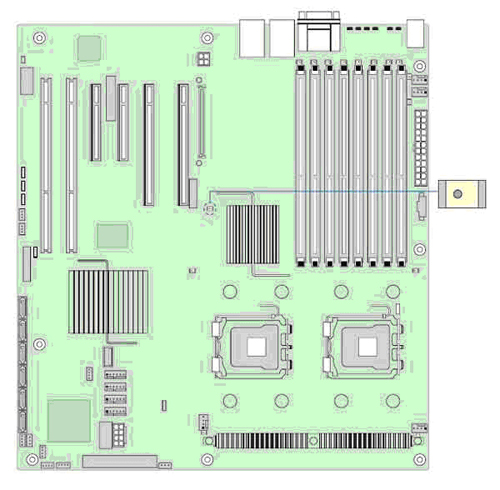
The DIG2 Computer motherboard has two (2) CPU Fan LEDs mounted close to the CPU Fan headers and two (2) System Chassis Fan LEDs mounted close to the rear of the motherboard, which indicates that the Fans are faulty in the DIG2 computer.
Illustration 12: Fan Fault Status LED Location
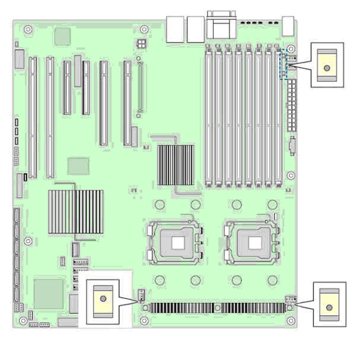
The DIG2 Computer motherboard has Memory DIMM fault indicator LED associated with each DIMM Socket location. If LED is illuminated, suspect a bad memory module.
Illustration 13: Memory DIMM Fault LEDs Location
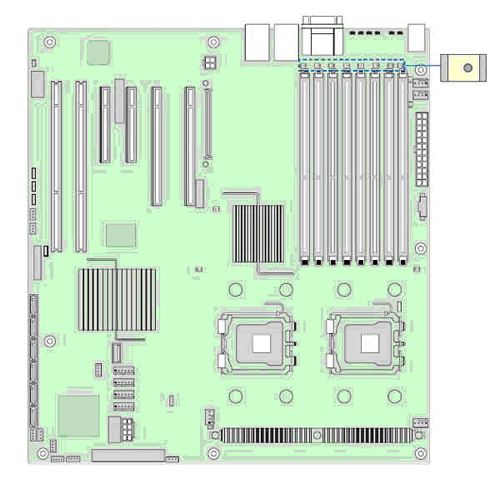
The DIG2 Computer motherboard has CPU fault indicator LED associated with each CPUs. If LED is illuminated, suspect a bad processor.
Illustration 14: CPU Fault LEDs Location
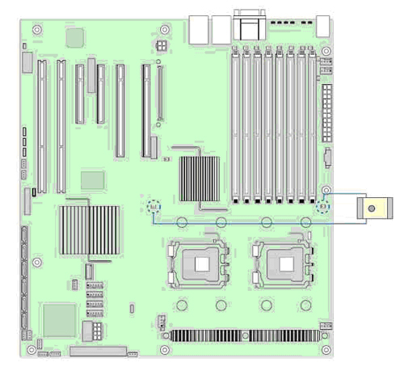
Whenever possible, the DIG2 Computer BIOS will output current boot progress codes on a video screen. The codes may be reported by the system BIOS or option ROMs.
The response column in the following table is divided into two (2) types:
Pause: The message is displayed in the Error Manager screen, an error is logged to the System Event Log (SEL), and use input is required to continue. The user can take immediate corrective action or choose to continue.
Halt: The message is displayed in the Error Manager screen, an error is logged to the SEL, and the system cannot boot unless the error is resolved.
Table 6: POST Error Messaging and Handling
| Error Code | Error Message | Response |
|---|---|---|
| 004C | Keyboard / Interface Error | Pause |
| 12 | CMOS date / time not set | Pause |
| 5220 | Configuration cleared by jumper | Pause |
| 5221 | Password clear by jumper | Pause |
| 5223 | Configuration default loaded | Pause |
| 48 | Password check failed | Halt |
| 141 | PCI resource conflict | Pause |
| 146 | Insufficient memory to shadow PCI ROM | Pause |
| 8110 | Processor 01 internal error (IERR) on last boot | Pause |
| 8111 | Processor 02 internal error (IERR) on last boot | Pause |
| 8120 | Processor 01 thermal trip error on last boot | Pause |
| 8121 | Processor 02 thermal trip error on last boot | Pause |
| 8130 | Processor 01 disabled | Pause |
| 8131 | Processor 02 disabled | Pause |
| 8160 | Processor 01 unable to apply BIOS Update | Pause |
| 8161 | Processor 02 unable to apply BIOS Update | Pause |
| 8190 | Watchdog timer failed on last boot | Pause |
| 8198 | Operating system boot watchdog timer expired on last boot | Pause |
| 192 | L3 cache size mismatch | Halt |
| 194 | CPUID, processor family are different | Halt |
| 195 | Front Side Bus mismatch | Pause |
| 197 | Processor speeds mismatch | Pause |
| 8300 | Baseboard management controller failed self test | Pause |
| 8306 | Front panel controller locked | Pause |
| 8305 | Hotswap controller failed | Pause |
| 84F2 | Baseboard management controller failed to respond | Pause |
| 84F3 | Baseboard management controller in update mode | Pause |
| 84F4 | Sensor data record empty | Pause |
| 84FF | System Event Log full | Pause |
| 8500 | Memory component could not be configured in the selected RAS mode | Pause |
| 8520 | DIMM_A1 failed Self Test | Pause |
| 8521 | DIMM_A2 failed Self Test | Pause |
| 8522 | DIMM_A3 failed Self Test | Pause |
| 8523 | DIMM_A4 failed Self Test | Pause |
| 8524 | DIMM_B1 failed Self Test | Pause |
| 8525 | DIMM_B2 failed Self Test | Pause |
| 8526 | DIMM_B3 failed Self Test | Pause |
| 8527 | DIMM_B4 failed Self Test | Pause |
| 8528 | DIMM_C1 failed Self Test | Pause |
| 8529 | DIMM_C2 failed Self Test | Pause |
| 852A | DIMM_C3 failed Self Test | Pause |
| 852B | DIMM_C4 failed Self Test | Pause |
| 852C | DIMM_D1 failed Self Test | Pause |
| 852D | DIMM_D2 failed Self Test | Pause |
| 852E | DIMM_D3 failed Self Test | Pause |
| 852F | DIMM_D4 failed Self Test | Pause |
| 8540 | Memory component lost redundancy during the last boot | Pause |
| 8580 | DIMM_A1 correctable ECC error encountered | Pause |
| 8581 | DIMM_A2 correctable ECC error encountered | Pause |
| 8582 | DIMM_A3 correctable ECC error encountered | Pause |
| 8583 | DIMM_A4 correctable ECC error encountered | Pause |
| 8584 | DIMM_B1 correctable ECC error encountered | Pause |
| 8585 | DIMM_B2 correctable ECC error encountered | Pause |
| 8586 | DIMM_B3 correctable ECC error encountered | Pause |
| 8587 | DIMM_B4 correctable ECC error encountered | Pause |
| 8588 | DIMM_C1 correctable ECC error encountered | Pause |
| 8589 | DIMM_C2 correctable ECC error encountered | Pause |
| 858A | DIMM_C3 correctable ECC error encountered | Pause |
| 858B | DIMM_C4 correctable ECC error encountered | Pause |
| 858C | DIMM_D1 correctable ECC error encountered | Pause |
| 858D | DIMM_D2 correctable ECC error encountered | Pause |
| 858E | DIMM_D3 correctable ECC error encountered | Pause |
| 858F | DIMM_D4 correctable ECC error encountered | Pause |
| 8600 | Primary and secondary BIOS IDs do not match | Pause |
| 8601 | Override jumper is set to force boot from lower alternative BIOS bank of flash ROM | Pause |
| 8602 | Watchdog timer expired (secondary BIOS may be bad) | Pause |
| 8603 | Secondary BIOS checksum fail | Pause |